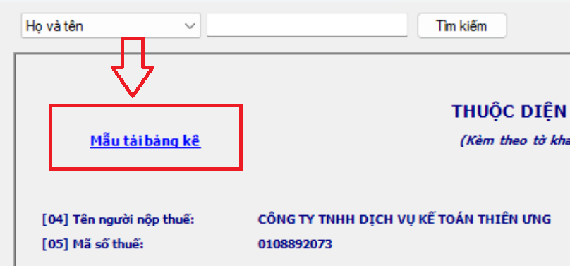
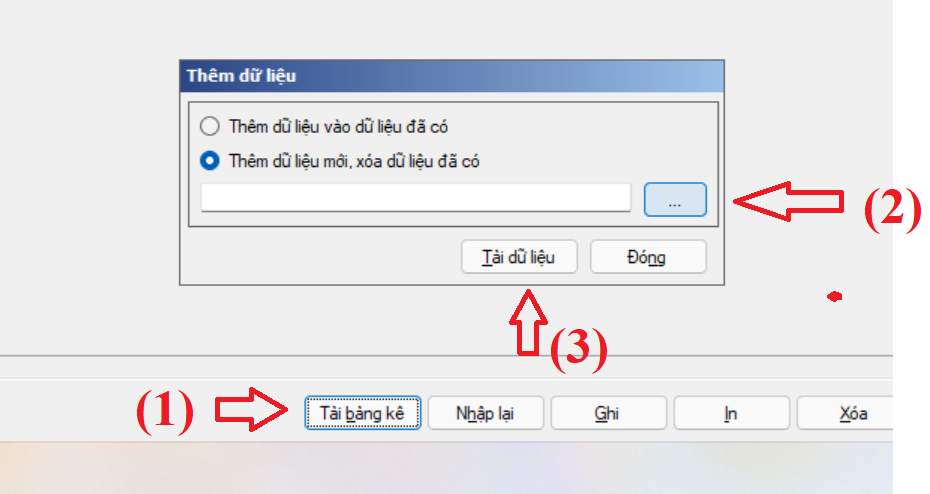
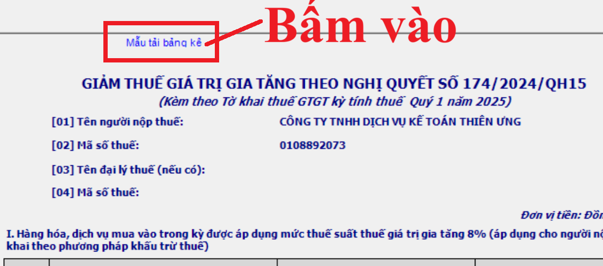
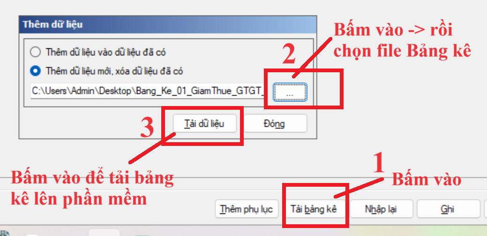
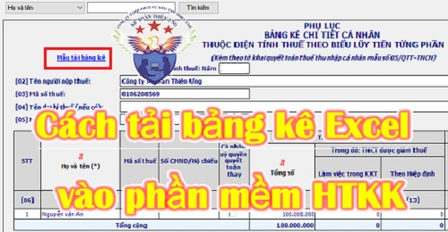

Khi các bạn thực hiện làm tờ khai thuế trên phần mềm HTKK thì có thể sử dụng chức năng Tải mẫu bảng kê Excel từ PM HTKK xuống => rồi đưa thông tin vào bảng kê Excel => Sau đó tải bảng kê lên phần mềm
Trình tự thực hiện tải bảng kê Excel như sau:+ Bước 1: Tải mẫu bảng kê Excel từ trên phần mềm HTKK xuống
+ Bước 2: Đưa thông tin vào bảng kê đã tải xuống ở bước 1
+ Bước 3: Lưu bảng kê
+ Bước 4: Đóng file bảng kê (tắt file bảng kê excel) đi
(Lưu ý: Bắt buộc phải thực hiện đóng bảng kê trước khi tải bảng kê lên phần mềm HTKK tại bước 5)
+ Bước 5: Tải bảng kê Excel lên phần mềm HTKK
Sau đây, Công ty đào tạo Kế Toán Diệu Tâm sẽ đưa ra 2 ví dụ cụ thể để các bạn tham khảo cách tải bảng kê Excel vào phần mềm HTKK:
1. Tải bảng kê 05-1/BK-TNCN: Bảng kê chi tiết cá nhân thuộc diện tính thuế theo biểu lũy tiến từng phần khi làm phụ lục tờ khai quyết toán thuế thu nhập cá nhân
Để có thể tải được bảng kê Excel " “Bang_Ke_05_1_QTT_TT80” thì tại phần mềm HTKK các bạn bấm vào tab phụ lục 05-1/BK-TNCN các bạn thực hiện lần lượt các bước như sau:
+ Bước 1: Tải mẫu bảng kê Excel “Bang_Ke_05_1_QTT_TT80” từ phụ lục 05-1/BK-TNCN từ trên phần mềm HTKK xuống
|
Bấm vào ô chữ màu xanh “Mẫu tải bảng kê” bên góc trái trên cùng của màn hình để tải xuống |
 |
+ Bước 2: Đưa thông tin và thu nhập của người lao động vào bảng kê “Bang_Ke_05_1_QTT_TT80”
Lấy thông tin, số liệu tại từ Bảng tính QTT TNCN
- Lưu ý: cần đưa cả thông tin cho cột số thứ tự để khi lên phần mềm có đầy đủ các dòng.
=> Nếu không đưa thông tin cho cột số thứ tự thì khi tải bảng kê lên phần mềm: những dòng không có số thứ tự sẽ không được lấy thông tin (không hiện thị) lên bảng kê phụ lục trên phần mềm.
+ Chỉ tiêu nào phần mềm tự lấy số liệu thì chỉ tiêu đó không cần làm
(Phần mềm tự động tổng hợp số liệu cho các chỉ tiêu có nền xanh như: chỉ tiêu 13, 16, 21, 23, 24, 25, 26)
- Lưu ý: cần đưa cả thông tin cho cột số thứ tự để khi lên phần mềm có đầy đủ các dòng.
=> Nếu không đưa thông tin cho cột số thứ tự thì khi tải bảng kê lên phần mềm: những dòng không có số thứ tự sẽ không được lấy thông tin (không hiện thị) lên bảng kê phụ lục trên phần mềm.
+ Chỉ tiêu nào phần mềm tự lấy số liệu thì chỉ tiêu đó không cần làm
(Phần mềm tự động tổng hợp số liệu cho các chỉ tiêu có nền xanh như: chỉ tiêu 13, 16, 21, 23, 24, 25, 26)
+ Bước 3: Lưu bảng kê “Bang_Ke_05_1_QTT_TT80”
+ Bước 4: Đóng file bảng kê đã đưa dữ liệu vào xong (Bấm vào dấu "x" để đóng, tắt bảng kê)
(Lưu ý: Bắt buộc phải thực hiện đóng bảng kê trước khi tải bảng kê lên phần mềm HTKK tại bước 5)
+ Bước 5: Tải bảng kê “Bang_Ke_05_1_QTT_TT80” lên PM HTKK
Tại phụ lục 05-1/BK-TNCN trên phần mềm HTKK ấn vào nút “Tải bảng kê” bên dưới cùng (ở giữa) của màn hình

Cách tải bảng kê “Bang_Ke_05_2_QTT_TT80”, “Bang_Ke_05_3_QTT_TT80” thì các bạn cũng làm tương tự từng bước như bảng kê “Bang_Ke_05_1_QTT_TT80” bên trên
---------------------------------------------------------------------------
-------------------------------------------------------------------------------------------
2. Tải bảng kê Excel “PL 142/2024/QH15 - 174/2024/QH15” Phụ lục giảm thuế GTGT lên phần mềm HTKK khi làm tờ khai thuế GTGT
Bước 1: Tải phụ lục “Bang_Ke_01_GiamThue_GTGT_NQ142_GTGT_TT80” từ trên phần mềm HTKK về máy tính
Tại phụ lục “PL 142/2024/QH15 - 174/2024/QH15” trên phần mềm HTKK => Bấm vào “Mẫu tải bảng kê” để tải bảng kê Excel xuống

Bước 2: Kê khai các hàng hóa, dịch vụ mua vào, bán ra được giảm thuế GTGT vào sheet “Bang Ke” trên file Excel “Bang_Ke_01_GiamThue_GTGT_NQ142_GTGT_TT80”
+ Cột 1 “STT”: là số thứ tự của các dòng hàng hóa dịch vụ được giảm thuế GTGT tại cột số 2
Lưu ý: không được bỏ trống cột số thứ tự vì những dòng không có thông tin về số thứ tự, khi tải lên phần mềm sẽ không còn dữ liệu. Thậm chí những dòng phía dưới của dòng không có số thứ tự đó cũng sẽ không hiển thị thông tin lên phần mềm (dù cho những dòng phía dưới này có số thứ tự thì cũng sẽ không hiển thị)
Do đó, nếu bảng kê của công ty các bạn mà có từ 6 dòng trở lên (Nhiều hơn 5 dòng có sẵn của bảng kê tải từ phần mềm) thì phải đưa thêm số thứ tự cho các dòng đó tại cột “STT” trên bảng kê.
+ Cột 2 “Tên hàng hóa dịch vụ”: Ghi tên hàng hóa dịch vụ được giảm thuế GTGT còn 8% phát sinh trong kỳ
+ Cột 3 “Giá trị hàng hóa, dịch vụ chưa có thuế GTGT”: Tổng hợp doanh thu chưa có thuế của từng hàng hóa dịch vụ đã ghi tại cột 2
Lưu ý đối với cột 2 và cột 3:
+ Nếu trên hóa đơn vừa có mặt hàng được giảm thuế GTGT (8%) vừa có mặt hàng không được giảm thuế GTGT (KKKNT, KCT, 5%, 10%) thì chỉ kê khai những mặt hàng được giảm thuế GTGT còn 8% vào phụ lục “PL 142/2024/QH15 - 174/2024/QH15” thôi (Không kê khai các mặt hàng không được giảm thuế GTGT vào phụ lục “PL 142/2024/QH15 - 174/2024/QH15”)
+ Mỗi mặt hàng đưa vào 1 dòng
+ Được kê khai chung theo tên hàng hóa dịch vụ lên phụ lục “PL 142/2024/QH15 - 174/2024/QH15”, mà không cần kê khai chi tiết theo từng hóa đơn hoặc từng lần bán
Nếu mặt hàng được giảm thuế đó được xuất bán nhiều lần trong kỳ kê khai thì tổng hợp, tổng cộng tất cả các lần bán trong kỳ đó lại để kê khai vào 1 dòng trên phụ lục
+ Cột 3 “Giá trị hàng hóa, dịch vụ chưa có thuế GTGT”: Tổng hợp doanh thu chưa có thuế của từng hàng hóa dịch vụ đã ghi tại cột 2
Lưu ý đối với cột 2 và cột 3:
+ Nếu trên hóa đơn vừa có mặt hàng được giảm thuế GTGT (8%) vừa có mặt hàng không được giảm thuế GTGT (KKKNT, KCT, 5%, 10%) thì chỉ kê khai những mặt hàng được giảm thuế GTGT còn 8% vào phụ lục “PL 142/2024/QH15 - 174/2024/QH15” thôi (Không kê khai các mặt hàng không được giảm thuế GTGT vào phụ lục “PL 142/2024/QH15 - 174/2024/QH15”)
+ Mỗi mặt hàng đưa vào 1 dòng
+ Được kê khai chung theo tên hàng hóa dịch vụ lên phụ lục “PL 142/2024/QH15 - 174/2024/QH15”, mà không cần kê khai chi tiết theo từng hóa đơn hoặc từng lần bán
Nếu mặt hàng được giảm thuế đó được xuất bán nhiều lần trong kỳ kê khai thì tổng hợp, tổng cộng tất cả các lần bán trong kỳ đó lại để kê khai vào 1 dòng trên phụ lục
+ Cột 4, 5, 6: Không phải kê khai lên bảng kê, các cột này khi tải lên phần mềm HTKK sẽ được phần mềm HTKK tự động tổng hợp, tính toán
Bước 3: Lưu bảng kê
Bước 4: Đóng bảng kê
Sau khi đã lưu xong bảng kê đã được đưa thông tin xong thì tiến hành đóng bảng kê (tắt bảng kê đi)
Lưu ý: Bắt buộc phải tắt bảng kê đi thì mới tải được bảng kê lên phần mềm HTKK
Bước 5: Tải bảng kê đã có số liệu lên phần mềm HTKKLưu ý: Bắt buộc phải tắt bảng kê đi thì mới tải được bảng kê lên phần mềm HTKK
Tại Tab phụ lục “PL 142/2024/QH15 - 174/2024/QH15” trên phần mềm HTKK => Bấm vào “Tải bảng kê”
Rồi bấm vào ô có dấu 3 chấm để chọn đường dẫn nơi đã lưu bảng kê tại bước 3 => Rồi bấm vào “Tải dữ liệu”

-------------------------------------------------------------------------------------------
Kế toán Diệu Tâm chúc các bạn thành công!
Các bạn muốn làm kế toán thuế chuyên sâu, xác định chi phí được trừ - không được trừ, cách quyết toán thuế và kỹ năng quyết toán thuế cuối năm ... => Có thể tham gia Khóa học kế toán thuế thực hành thực tế chuyên sâu.
Kế toán Diệu Tâm chúc các bạn thành công!
Các bạn muốn làm kế toán thuế chuyên sâu, xác định chi phí được trừ - không được trừ, cách quyết toán thuế và kỹ năng quyết toán thuế cuối năm ... => Có thể tham gia Khóa học kế toán thuế thực hành thực tế chuyên sâu.
-----------------------------------------------------------------------------------------------
